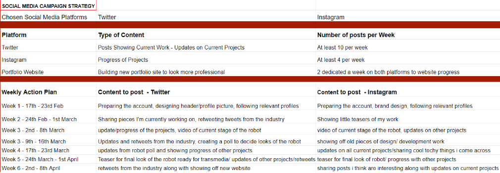
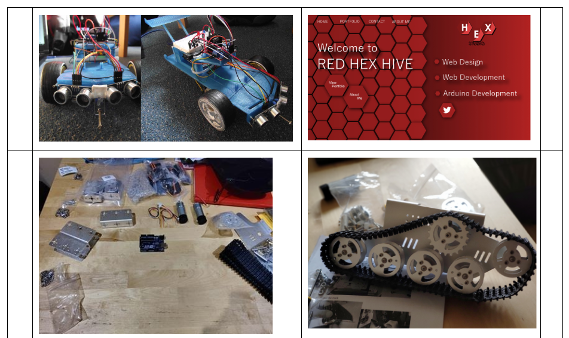
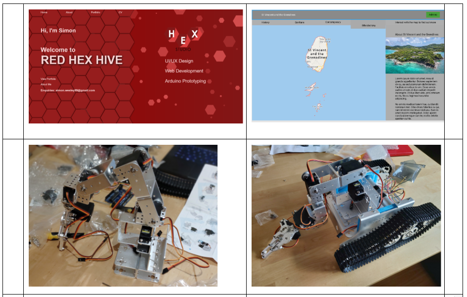

An individual project with the main aim of improving my social media presence to improve traffic to my portfolio website and begin to build a network with specialists from the industry
To begin this project I researched the social media platforms I would be interested in and would be best for me to gain a following, My main goal with this campaign was to build a following and get people interested and looking at my projects. I chose Instagram and twitter and briefly planned out 12 weeks of content that I would post
As I already had started a few of my projects I picked a few pieces out that I could post of the early stages of my projects.
 I wanted to keep this campaign mainly focused on both web design/development and the development of my robot for Transmedia 2020. Over the 20 weeks the robot was by far got the most attention with a peak of around 600 unique accounts reached through progression of the robot. The web design/developments posts got an average amount of views and likes but nowhere near as much as the robot, I decided I’d mainly focus on Arduino posts and robots from week 6 as this was gaining much more attention and I feel like I needed to stick to one subject.
This was my most popular by far and blew up and gained a lot of attention, I believe this was down to the right people with high followings viewing and liking the post which caused it to blow it with it gaining 513 views in total and 80 likes which is higher than any of my posts on Instagram
One of the biggest problems I had was maintaining and gaining a following on Twitter. From my post on twitter compared to Instagram I was getting next to no interaction with my twitter which caused me to stop consistently posting to it, In the future I may try it again and research the best ways to gain a following or try a different social media platform as I think twitter wasn’t really the right place for what I was trying to accomplish.
Overall, I gained a small following of 52 followers on Instagram but could do much better to grow it by engaging with my audience more to grow. I can achieve this through posting stories with questions and through polls to spark conversations with people within my chosen community.